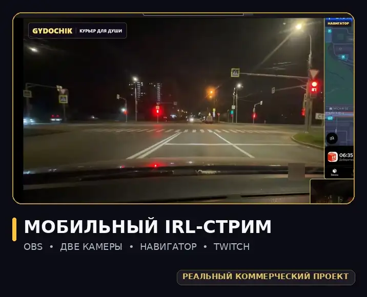
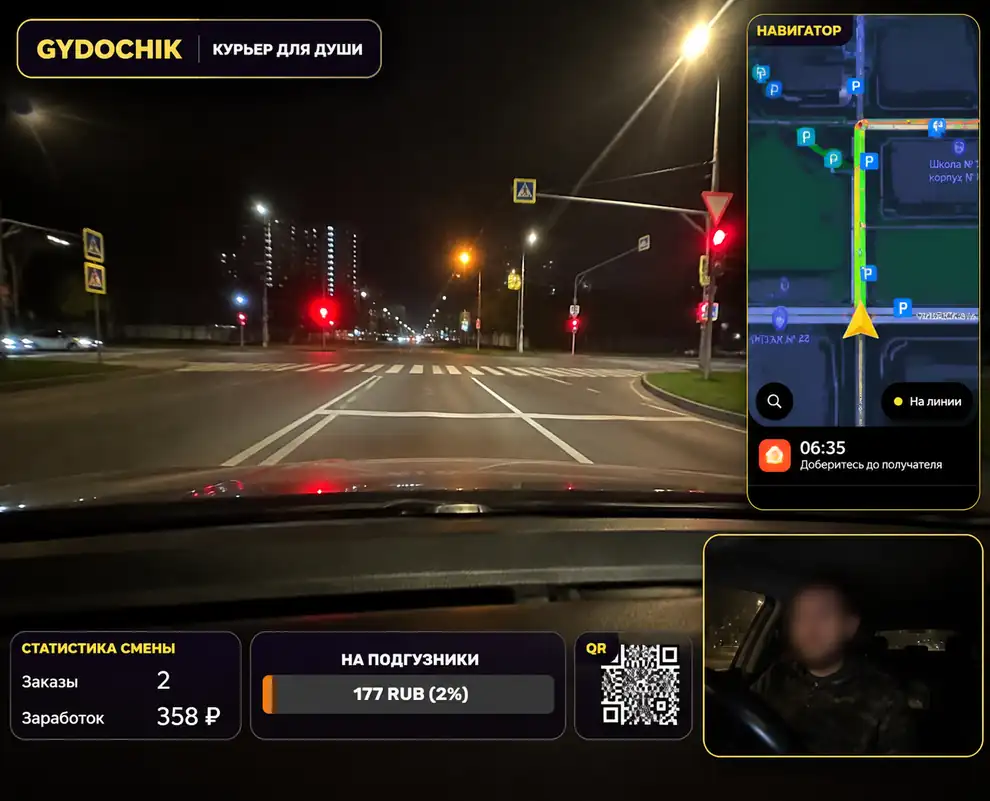

Mobile video
Connect the iPhone's camera feeds to OBS on the PC.
A streaming workflow for a courier: mobile cameras, Android navigation, OBS scenes, donations and on-shift statistics. The challenge was to make all sources work together while on the move.
For IRL streaming, reliable video transport and convenient scene control matter as much as visuals.
Connect the iPhone's camera feeds to OBS on the PC.
Bring the Android navigation display into OBS with suitable aspect ratio and connection settings.
Build navigation and no-navigation scenes, a pause scene, donations, chat and shift-statistics overlay.
Mobile inputs are combined in OBS, which produces the final broadcast layout.
Camera feeds
Navigation display
Scenes, chat and HUD
Final broadcast
Selected examples from the streaming layout work.


Source integration, scene design and practical workflow checks.
Navigation layout, camera-only view and a break scene.
iPhone and Android inputs transported to OBS with networking constraints in mind.
Chat, DonationAlerts QR, alerts and balanced source positioning.
On-screen order count and earnings information in the layout.
We can plan and configure cameras, audio, OBS scenes and mobile transport for your setup.